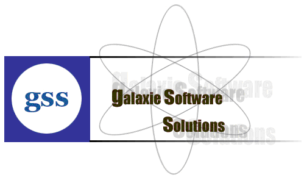

Galaxy Software Solutions (GSS) is an IT Solution Provider for a dynamic environment where business and technology strategies converge. Our approach focuses on new ways of business combining IT innovation and adoption while also leveraging an organization's current IT assets. We work with large global corporations and new generation technology companies - to build new products or services and to implement prudent business and technology strategies in today's environment.
Galaxy's range of expertise includes:
- Software Development Services
- Engineering Services
- Systems Integration
- Customer Relationship Management
- Supply Chain Management
- Product Development
- Electronic Commerce
- Consulting
- IT Outsourcing
We apply technology with innovation and responsibility to achieve two broad objectives:
- Effectively address the business issues our customers face today
- Generate new opportunities that will help them stay ahead in the future
This approach rests on:
- A strategy where we Architect, Integrate and Manage technology services and solutions — we call it AIM for success
- A robust offshore development methodology and reduced demand on customer resources
- A focus on the use of reusable frameworks to provide cost and time benefits
We combine the best people, processes and technology to achieve excellent results — consistently. We offer customers the advantages of:
Speed:
We understand the importance of timing, of getting there before the competition. A rich portfolio of reusable, modular frameworks helps jump-start projects. Tried and tested methodology ensures that we follow a predictable, low-risk path to achieve results. Our track record is testimony to complex projects delivered within and even before schedule.
Expertise:
Our teams combine cutting edge technology skills with rich domain expertise. What's equally important — we share a strong customer orientation that means we actually start by listening to the customer. We're focused on coming up with solutions that serve customer requirements today and anticipate future needs.
A Full Service Portfolio:
We offer customers the advantage of being able to Architect, Integrate and Manage technology services. This means that they can rely on one, fully accountable source instead of trying to integrate disparate multi-vendor solutions.
Services:
GSS is providing its services to Sain medicaments Pvt. Ltd, Grace drugs and pharmaceuticals pvt ltd alka drugs and pharmaceuticals pvt ltd to name just a few with out rich experience and expertise in Information Technology we are in the best position to provide software solutions to distinct business requirements.